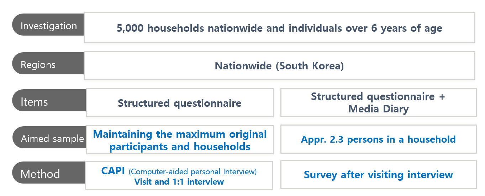

Since 2010 KISDI has surveyed the same people annually about people’s media behavior (Smartphone brand, telecom company, spending related to media, SNS usage, and so on)

Korea Media Panel data is used in news articles based on media statistics, such as the article below.
# The first element of the fifth elementList.KMP[[5]][[1]]<-c(1:10)# The second element of the fifth elementList.KMP[[5]][[2]]<-matrix(c(1:12), nrow=4)
pid age gender Mobile.lv Telecom Smartphone.brand sp.mobile
1 9920004 9 Male No Smartphone No Smartphone No Smartphone 0
2 12500003 26 Male LTE KT Samsung 42
3 17350004 12 Female LTE LG U+ Samsung 19
4 17670001 55 Male LTE SKT Samsung 38
5 23860001 70 Male No Smartphone No Smartphone No Smartphone 18
6 24450001 58 Male LTE SKT Samsung 65
7 27570001 50 Male LTE SKT Samsung 32
8 53620001 68 Male LTE SKT Samsung 58
9 59570001 39 Male LTE KT Samsung 63
10 65840001 37 Female LTE-A KT LG 54
sp.device sp.online.content sp.offline.contet year
1 0 0 10 2017
2 0 53 22 2017
3 0 19 0 2017
4 0 38 0 2017
5 0 18 0 2017
6 0 65 50 2017
7 0 32 36 2017
8 10 68 0 2017
9 0 63 25 2017
10 10 114 40 2017
# Summary Statisticssummary(p17_df)
pid age gender Mobile.lv
Min. : 9920004 Min. : 9.00 Male :8 3G :0
1st Qu.:17430003 1st Qu.:28.75 Female:2 LTE :7
Median :24155001 Median :44.50 LTE-A :1
Mean :31235002 Mean :42.40 5G :0
3rd Qu.:47107501 3rd Qu.:57.25 No Smartphone:2
Max. :65840001 Max. :70.00
Telecom Smartphone.brand sp.mobile sp.device
SKT :4 Samsung :7 Min. : 0.00 Min. : 0
KT :3 No Smartphone:2 1st Qu.:22.25 1st Qu.: 0
LG U+ :1 LG :1 Median :40.00 Median : 0
MVNO :0 Apple :0 Mean :38.90 Mean : 2
No Smartphone:2 Pantech :0 3rd Qu.:57.00 3rd Qu.: 0
Xiaomi :0 Max. :65.00 Max. :10
(Other) :0
sp.online.content sp.offline.contet year
Min. : 0.00 Min. : 0.00 Min. :2017
1st Qu.: 22.25 1st Qu.: 0.00 1st Qu.:2017
Median : 45.50 Median :16.00 Median :2017
Mean : 47.00 Mean :18.30 Mean :2017
3rd Qu.: 64.50 3rd Qu.:33.25 3rd Qu.:2017
Max. :114.00 Max. :50.00 Max. :2017
Among 10 people, How many people did use Samsung phone at 2017?
How much did people spend for the mobile communication on average?
Do the same thing to 2019 data set and answer the questions below.
In 2019, how many people did use Samsung phone?
Draw boxplot of people’s spending on the mobile communication
*Hint: use boxplot()
Filter
# 02 Conditional statements and loop statements for data purification #test =c(15, 20, 30, NA, 45) # If it is a vectortest[test<40] # extract elements with value less than 40
[1] 15 20 30 NA
test[test%%3!=0] # Extract elements whose value is not divisible by 3
[1] 20 NA
test[is.na(test)] # Extract elements that are NA
[1] NA
test[!is.na(test)] # Extract non-NA elements
[1] 15 20 30 45
test[test%%2==0&!is.na(test)] # Extract elements that are multiples of 2 but are not NA
[1] 20 30
characters =data.frame(name =c("Gil-dong", "Chunhyang", "Cheolsu"),age =c(30, 16, 21),gender =factor(c("M", "F","M")))# In case of data framecharacters
name age gender
1 Gil-dong 30 M
2 Chunhyang 16 F
3 Cheolsu 21 M
characters[characters$gender =="F",1] # Extract rows where gender is female
[1] "Chunhyang"
library(dplyr)
Attaching package: 'dplyr'
The following objects are masked from 'package:stats':
filter, lag
The following objects are masked from 'package:base':
intersect, setdiff, setequal, union
A data frame with 153 observations on 6 variables.
[,1]
Ozone
numeric
Ozone (ppb)
[,2]
Solar.R
numeric
Solar R (lang)
[,3]
Wind
numeric
Wind (mph)
[,4]
Temp
numeric
Temperature (degrees F)
[,5]
Month
numeric
Month (1–12)
Details
Daily readings of the following air quality values for May 1, 1973 (a Tuesday) to September 30, 1973.
Ozone: Mean ozone in parts per billion from 1300 to 1500 hours at Roosevelt Island
Solar.R: Solar radiation in Langleys in the frequency band 4000–7700 Angstroms from 0800 to 1200 hours at Central Park
Wind: Average wind speed in miles per hour at 0700 and 1000 hours at LaGuardia Airport
Temp: Maximum daily temperature in degrees Fahrenheit at La Guardia Airport.
pairs(airquality, panel = panel.smooth, main ="airquality data")
What are the column names of the data frame?
*Hint: names()
What are the row names of the data frame?
*Hint: rownames()
Extract the first 10 rows in ‘airquality’
*Hint: One way: by using [] / Alternative way: by using head()
Check the number of rows (observations) in the dataset
*Hint: length() or nrow()
How many missing values are in the ‘Ozone’ column ?
*Hint: is.na() and sum()
What is the mean value of the ‘Ozone’ column? (Exclude missing values (coded as NA) from this calculation)
*Hint: Use mean() with an option na.rm = T
Extract the subset where Ozone values are above 31 and Temp values are above 90.
*Hint: Use subset()
Use the apply function to calculate the standard deviation of each column in the data frame
*Hint: Use apply() with an option na.rm = T / Use sd() function
Calculate the mean value of ‘Ozone’ for each Month in the data frame and create a vector containing the monthly means (exclude all missing values)
*Hint: Use tapply() with an option na.rm = T
Draw a random sample of 5 rows from the data frame
*Hint: Use sample(), nrow(), airquality[]
Introduction to Tidyverse
The tidyverse is a powerful collection of R packages that are actually data tools for transforming and visualizing data. All packages of the tidyverse share an underlying philosophy and common APls.
The core packages are:
ggplot2, which implements the grammar of graphics. You can use it to visualize your data.
dplyr is a grammar of data You can use it to solve the most common data manipulation challenges.
tidyr helps you to create tidy data or data where each variable is in a column, each observation is a row end each value is a column, each observation is a row end each value is a cell.
readr is a fast and friendly way to read rectangular
purrr enhances R’s functional programming (FP)toolkit by providing a complete and consistent set of tools for working with functions and vectors.
tibble is a modern re-imaginging of the data
stringr provides a cohesive set of functions designed to make working with strings as easy as possible
forcats provide a suite of useful tools that solve common problems with factors.
The introduction of the tidyverse package in R has significantly influenced the way data science is performed using R, impacting coding practices, data analysis methodologies, and the overall approach to data manipulation and visualization.
Before Tidyverse
Before the tidyverse, R programming was largely centered around base R functions and packages. This included using base R functions for data manipulation (like subset, merge, and apply functions) and visualization (such as plotting with plot and hist). The syntax and methods varied widely across different packages, which often led to inconsistent coding practices and a steeper learning curve for beginners. Each task could be approached in multiple ways without a clear ‘best’ method, leading to fragmented and less readable code.
After Tidyverse
The tidyverse, developed by Hadley Wickham and others, brought a suite of packages designed to work harmoniously together using a consistent syntax and underlying philosophy. Key features and impacts include:
Consistent Syntax: The tidyverse introduced a consistent and readable syntax that leverages chaining operations using the %>% operator from the magrittr package. This has made code more readable and easier to write and understand, especially for newcomers.
Data Manipulation: With dplyr, data manipulation became more intuitive and less verbose. Functions like filter(), arrange(), select(), mutate(), and summarise() allow for straightforward data operations that are both faster and easier to code compared to base R functions.
Data Importing and Tidying: readr for reading data and tidyr for tidying data introduced more efficient data reading and transforming capabilities, making it simpler to convert data into a tidy format. Tidy data, where each column is a variable and each row is an observation, has become a standard for data analysis, facilitating easier manipulation and analysis.
Visualization: ggplot2 transformed data visualization in R by allowing for the layering of plots intuitively and flexibly, using a system based on the grammar of graphics. This has enabled users to create complex, publication-quality graphs more easily than was possible with base R plotting functions.
Community and Accessibility: The tidyverse has fostered a strong community and has contributed significantly to teaching materials that are user-friendly and accessible to beginners. This has democratized data analysis in R, making it more accessible to non-programmers.
Impact on Package Development: The tidyverse’s philosophy and popularity have influenced the development of other packages, even those not part of the tidyverse, to adopt tidy principles and interoperate smoothly with tidyverse packages.
The tidyverse has not only changed the syntax and functionality of R coding but also its philosophy towards data analysis. It promotes a workflow that is coherent, transparent, and efficient, which has been widely adopted in academia, industry, and teaching. While some veteran R users prefer the flexibility and control of base R, the tidyverse’s approachable syntax and powerful capabilities have made it a pivotal tool in modern R programming, particularly for data science.
Sepal.Length Sepal.Width Petal.Length Petal.Width
Min. :4.300 Min. :2.300 Min. :1.000 Min. :0.100
1st Qu.:4.800 1st Qu.:3.200 1st Qu.:1.400 1st Qu.:0.200
Median :5.000 Median :3.400 Median :1.500 Median :0.200
Mean :5.006 Mean :3.428 Mean :1.462 Mean :0.246
3rd Qu.:5.200 3rd Qu.:3.675 3rd Qu.:1.575 3rd Qu.:0.300
Max. :5.800 Max. :4.400 Max. :1.900 Max. :0.600
Species
setosa :50
versicolor: 0
virginica : 0
# distinct: remove duplication (take only unique values)iris %>%distinct(Species)
Species n
1 setosa 50
2 versicolor 50
3 virginica 50
iris %>%sample_frac(0.3) %>%count(Species)
Species n
1 setosa 13
2 versicolor 17
3 virginica 15
iris %>%summarise_all(mean)
Warning: There was 1 warning in `summarise()`.
ℹ In argument: `Species = (function (x, ...) ...`.
Caused by warning in `mean.default()`:
! argument is not numeric or logical: returning NA
Sepal.Length Sepal.Width Petal.Length Petal.Width Species
1 5.843333 3.057333 3.758 1.199333 NA
Thanks to Garrick Aden-Buie (garrickadenbuie.com), we can teach joins very easily with his fantastic diagrams.
Let’s use some example datasets that come pre-loaded in R to demonstrate how joins work using dplyr. We will use the mtcars dataset, splitting it into two separate data frames to illustrate how the different types of joins operate.
First, let’s set up our example data frames from the mtcars dataset:
# Create two data frames from mtcarsdf1 <- mtcars[1:10, c("mpg", "cyl", "disp")] # first 10 rows, select specific columnsdf2 <- mtcars[5:15, c("disp", "hp", "drat")] # rows 5 to 15, select specific columns# Make sure there's a common key for joining; here, we'll use 'disp'# Print out the data frames to see what they containprint(df1)
All rows from x where there are matching values in y, and all columns from x and y.
inner_join_result <-inner_join(df1, df2, by ="disp")
Warning in inner_join(df1, df2, by = "disp"): Detected an unexpected many-to-many relationship between `x` and `y`.
ℹ Row 5 of `x` matches multiple rows in `y`.
ℹ Row 1 of `y` matches multiple rows in `x`.
ℹ If a many-to-many relationship is expected, set `relationship =
"many-to-many"` to silence this warning.
All rows from x, and all columns from x and y. Rows in x with no match in y will have NA values in the new columns.
left_join_result <-left_join(df1, df2, by ="disp")
Warning in left_join(df1, df2, by = "disp"): Detected an unexpected many-to-many relationship between `x` and `y`.
ℹ Row 5 of `x` matches multiple rows in `y`.
ℹ Row 1 of `y` matches multiple rows in `x`.
ℹ If a many-to-many relationship is expected, set `relationship =
"many-to-many"` to silence this warning.
print(left_join_result)
mpg cyl disp hp drat
1 21.0 6 160.0 NA NA
2 21.0 6 160.0 NA NA
3 22.8 4 108.0 NA NA
4 21.4 6 258.0 NA NA
5 18.7 8 360.0 175 3.15
6 18.7 8 360.0 245 3.21
7 18.1 6 225.0 105 2.76
8 14.3 8 360.0 175 3.15
9 14.3 8 360.0 245 3.21
10 24.4 4 146.7 62 3.69
11 22.8 4 140.8 95 3.92
12 19.2 6 167.6 123 3.92
13 19.2 6 167.6 123 3.92
Left Join (Extra Rows in y)
… If there are multiple matches between x and y, all combinations of the matches are returned.
Right Join
All rows from y, and all columns from x and y. Rows in y with no match in x will have NA values in the new columns.
right_join_result <-right_join(df1, df2, by ="disp")
Warning in right_join(df1, df2, by = "disp"): Detected an unexpected many-to-many relationship between `x` and `y`.
ℹ Row 5 of `x` matches multiple rows in `y`.
ℹ Row 1 of `y` matches multiple rows in `x`.
ℹ If a many-to-many relationship is expected, set `relationship =
"many-to-many"` to silence this warning.
print(right_join_result)
mpg cyl disp hp drat
1 18.7 8 360.0 175 3.15
2 18.7 8 360.0 245 3.21
3 18.1 6 225.0 105 2.76
4 14.3 8 360.0 175 3.15
5 14.3 8 360.0 245 3.21
6 24.4 4 146.7 62 3.69
7 22.8 4 140.8 95 3.92
8 19.2 6 167.6 123 3.92
9 19.2 6 167.6 123 3.92
10 NA NA 275.8 180 3.07
11 NA NA 275.8 180 3.07
12 NA NA 275.8 180 3.07
13 NA NA 472.0 205 2.93
Full Join
All rows and all columns from both x and y. Where there are not matching values, returns NA for the one missing.
full_join_result <-full_join(df1, df2, by ="disp")
Warning in full_join(df1, df2, by = "disp"): Detected an unexpected many-to-many relationship between `x` and `y`.
ℹ Row 5 of `x` matches multiple rows in `y`.
ℹ Row 1 of `y` matches multiple rows in `x`.
ℹ If a many-to-many relationship is expected, set `relationship =
"many-to-many"` to silence this warning.
print(full_join_result)
mpg cyl disp hp drat
1 21.0 6 160.0 NA NA
2 21.0 6 160.0 NA NA
3 22.8 4 108.0 NA NA
4 21.4 6 258.0 NA NA
5 18.7 8 360.0 175 3.15
6 18.7 8 360.0 245 3.21
7 18.1 6 225.0 105 2.76
8 14.3 8 360.0 175 3.15
9 14.3 8 360.0 245 3.21
10 24.4 4 146.7 62 3.69
11 22.8 4 140.8 95 3.92
12 19.2 6 167.6 123 3.92
13 19.2 6 167.6 123 3.92
14 NA NA 275.8 180 3.07
15 NA NA 275.8 180 3.07
16 NA NA 275.8 180 3.07
17 NA NA 472.0 205 2.93
Filtering Joins
Filtering joins match observations in the same way as mutating joins, but affect the observations, not the variables. … Semi-joins are useful for matching filtered summary tables back to the original rows. … Anti-joins are useful for diagnosing join mismatches. R for Data Science: Filtering Joins
Semi Join
All rows from x where there are matching values in y, keeping just columns from x.
semi_join_result <-semi_join(df1, df2, by ="disp")print(semi_join_result)